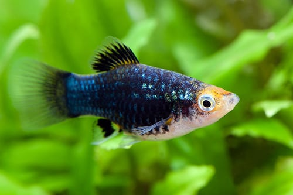
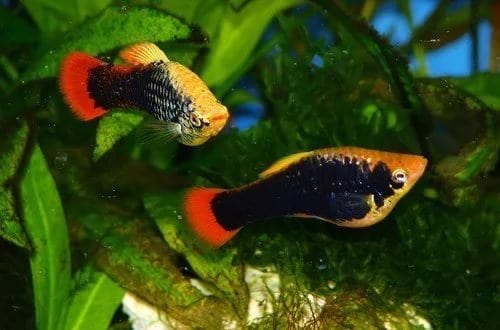

Пецилій
Пеціліі (лат. Poecilia) - рід риб сімейства живонароджених коропозубоподібні (пецилиевих), широко поширених у акваріумістів усього світу. Російська назва цих риб (моллінезіі) походить від раніше використовувався родового Mollienesia. Спочатку ця назва поширювалося тільки на меланістскіе форми пецілій, але з часом перейшло на ряд видів пецілій.
Ареал
Поряд з гуппі дуже поширене і популярне розведення різноманітних пецілій. Риби ці були вперше привезені до Європи в 1907 році з Південної Мексики і Гватемали, де вони живуть в низинах річок, що впадають в Атлантичний океан. Парусна моллінезія (Poecilia velifera) зустрічається головним чином на півострові Юкатан, шірокоплавніковая пецілія (Poecilia latipinna) - в прісних і солонуватих водах південно-східного узбережжя Північної Америки і остромордая моллінезія - уздовж східного узбережжя Північної і Центральної Америки до Венесуели. У природних умовах зустрічаються різноманітні за забарвленням (від жовто-сірого до плямистої) локальні зграї. В кінці XIX - початку XX століття плямиста форма моллінезіі була завезена в Європу. На початку 40-х років особливо популярною стала чорна форма рибок, виведена в США. У природі пеціліі не так красиво пофарбовані, як їх нащадки, що живуть в акваріумі. Вони коричнево-жовті, з двома темними плямами перед хвостовим плавцем. В результаті багаторічного розведення виникли форми, які, зберігши незмінною форму тіла, надзвичайно різноманітні за забарвленням. Дикі форми моллінезіі кілька нагадують пецілій, хоча тіло у моллінезіі більш довгасте і округле. Це рибки 4-18 см (самки більші за самців) з коротким, щільним тілом і сильним, широким хвостовим плавцем. У сформованих самців анальний плавець згорнуть в трубочку, і утворює совокупительний орган - гоноподий. Розрізняються близько десяти колірних варіацій. Сухі, живі, морожені корми - все це добре поїдає пецілія. Зміст пеціліі буде ідеальним, якщо годувати її мотилем, трубочник і дафнії; також підходить циклоп. Додатково рибок підгодовують рослини, але корм їм треба давати періодично, щотижня змінюючи їх раціон і вид.